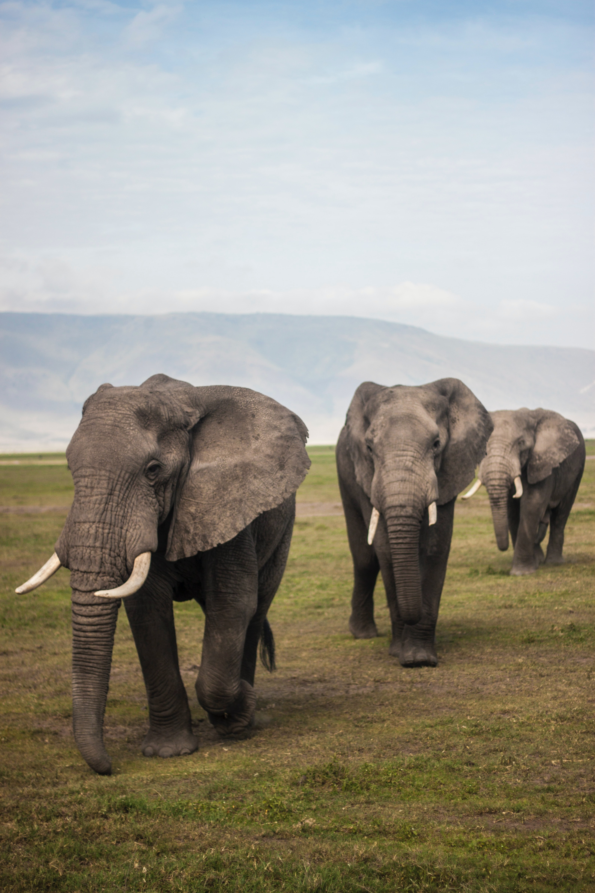

Introduction
Elephants are the largest land mammals on earth and have distinctly massive bodies, large ears, and long trunks. They use their trunks to pick up objects, trumpet warnings, greet other elephants, or suck up water for drinking or bathing, among other uses.

Physical Characteristics
The trunk, or proboscis, of the elephant is one of the most versatile organs to have evolved among mammals. This structure is unique to members of the order Proboscidea, which includes the extinct mastodons and mammoths. Anatomically, the trunk is a combination of the upper lip and nose; the nostrils are located at the tip. The trunk is large and powerful, weighing about 130 kg (290 pounds) in an adult male and capable of lifting a load of about 250 kg. However, it is also extremely dexterous, mobile, and sensitive, which makes it appear almost independent of the rest of the animal. The proboscis comprises 16 muscles. A major muscle covering the top and sides functions to raise the trunk; another covers the bottom. Within the trunk is an extremely complex network of radiating and transverse muscle fascicles that provide fine movement. A total of nearly 150,000 muscle fascicles have been counted in cross sections of trunk. The trunk is innervated by two proboscidean nerves, which render it extremely sensitive.
